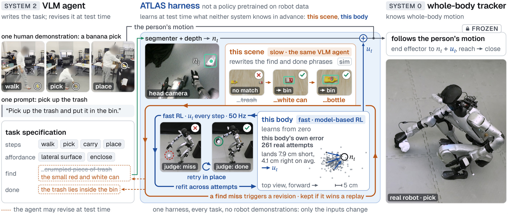
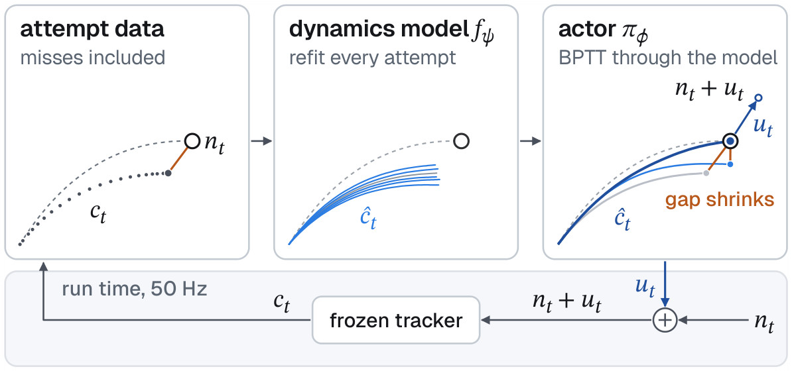
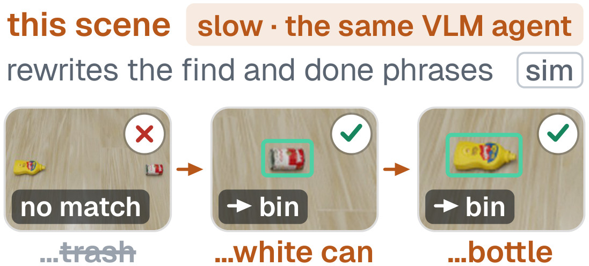

/ 01
Overview
Tell a humanoid to go down the stairs, pick up a chip bag and come back up. It has seen a person do it once, in one video. Its first grasp misses. It retries where it stands, takes the bag and climbs back. No robot demonstrations, no task-specific training in simulation, and no pretrained model fine-tuned for the job.
ATLAS changes the middle layer of the humanoid stack. Between a vision-language agent and a frozen whole-body tracker, it puts a harness that learns at test time what neither can know in advance: how this robot executes a command, and what the task means in this scene.
The abstract, from the paper
Vision-language agents have demonstrated strong tabletop manipulation capabilities, rivaling cutting-edge general robot policies such as vision-language-action (VLA) models or world action models (WAMs) without using task-specific robot demonstrations. Extending these capabilities to humanoid whole-body intelligence remains challenging: agents can design navigation and pure manipulation skills, but extending their repertoire to new whole-body interactions often requires specialized and expansive skill training in simulation. Human video demonstrations offer a source of whole-body motion skills, but realizing the demonstrated interactions requires adapting these motions to the instructed targets, the current scene, and the robot’s execution dynamics. This motivates an adaptive middle layer that uses agent reasoning to ground human motion references in the instructed task and scene, while learning to adapt motion commands to the whole-body controller to compensate for the human–robot embodiment gap and tracking errors. We present ATLAS: Agentic Test-time Learning and Adaptation System, an agentic harness for humanoid loco-manipulation from a single human video and a language instruction. The agent determines how to apply the demonstrated motion to the instructed objects in the current scene, and a frozen whole-body tracker executes it. During execution, online model-based RL learns how the tracker responds to commands and adjusts them to compensate for embodiment differences and tracking errors. Meanwhile, the same agent reviews the robot’s observations to improve target recognition and success checks. Failed attempts trigger autonomous retries, allowing both task grounding and control execution to improve through experience. To the best of our knowledge, ATLAS is the first agentic whole-body intelligence system to achieve this without task-specific robot demonstrations, VLA/WAM, or task-specific simulation training. We demonstrate ATLAS on a real humanoid performing coordinated whole-body loco-manipulation, including tasks that combine stair traversal with object manipulation, using only onboard sensing. In both simulation and real-world experiments, ATLAS enables the robot to acquire skills from a single human video demonstration and a language instruction per task, improve task performance through test-time learning, and transfer these skills across objects and scenes. Against official GR00T checkpoints post-trained for loco-manipulation and static pick-and-place, ATLAS achieves 30.4% and 12.6% higher success rates, respectively, without task-specific robot demonstrations or task-specific policy pretraining.
/ 02
The Cost of the Middle Layer
Many robot systems now share a three-layer stack.14, 17, 38 A vision-language model (VLM) agent plans (System 2), a policy outputs the commands (System 1), and a whole-body controller tracks them (System 0). The middle layer is usually a vision-language-action model (VLA) or a world action model (WAM), and training it takes a great deal of data.
- Tens of thousands of hoursof robot demonstrations, to pretrain a leading model43
- A million hoursof human video mixed with robot data, for another14
- Hundreds to thousandsof teleoperated trajectories, to fine-tune a GR00T N1.5 VLA for each new task36
- About 100 homesof data, for the π0.5 VLA to approach a model trained in the test homes42
Much of that data teaches the policy what the agent above it already knows, such as which object to take and where to grasp it. So we asked what the middle layer actually has to learn.
/ 03
Learn Only What No One Knows in Advance
Agents already put their knowledge to work on the tabletop. They write robot code32 or keypoint constraints24 with no task-specific robot data, and on manipulation benchmarks coding agents now reach success rates comparable to, and sometimes above, those of post-trained VLAs.15, 18
A humanoid can squat to the floor or climb stairs, but an agent must then direct the whole body. The simplest way connects the agent straight to the controller or its skills. In HomeBody, a VLM calls a library of engineered skills, and the robot pauses between skills while the agent reasons.26 In OmniH2O, GPT-4o responds too slowly to generate motion goals, so it picks motion primitives.22 In both, nothing between the agent and the controller learns from the robot’s own attempts.
ATLAS asks the middle layer to learn only what neither the agent nor the controller can know in advance: how this real robot executes a command, and the fine-grained task specification in this scene. A prompt such as “Pick up the trash and put it in the bin.” does not say which item in the scene is the trash.

/ 04
From One Video to a Task Specification
A new task starts with one human video and one prompt. We recover the person’s motion from the video44 and retarget it to the robot,5 which gives the reference motion. The agent then cuts that motion into steps and, once per task, writes the task specification.
- steps
- walkpickcarryplace
- affordance
- lateral surfaceenclose
- find
- the small crumpled piece of trash.
- done
- the trash lies inside the bin
Apart from its phrases, the specification uses a closed vocabulary in which each value maps to one fixed behavior, so it runs unchanged in simulation and on the robot. The affordance says where on the object the end effector arrives and how it closes. The find phrases tell a segmenter8 what to look for, and the done phrase describes the end state the head camera should see. On 25 of 28 held-out tasks, the agent’s specification matches the deployed one in every key field.
At run time the segmenter finds the object in the head camera’s image, and depth places the affordance in 3-D. That gives the end-effector target. A frozen whole-body tracker, ScaleBFM,58 then follows the person’s motion to it at 50 Hz, with no policy switch between walking and the pick.

/ 05
Learning How This Body Misses
A general tracker does not land exactly where it is told. On our robot, the uncorrected end effector lands on average 7.9 cm short of its target, over 261 attempts. One attempt’s deviation from that average does not predict the next, so a fixed offset can cancel the average but not the deviation. The body’s response to a command does carry over, and only the running robot reveals it.
So the fast system learns that response on the robot. From the reach to the close, an actor reads the end effector’s position at every control step and adds a residual to the tracker’s end-effector command. The residual shifts only the tracker’s input, not the reference, so the target stays the target and the body keeps following the person’s motion.
Across attempts, we refit a dynamics model to the attempts so far, misses included, and update the actor by backpropagating through that model. Both start untrained in every session, and the first 5 attempts are a warm-up in which the robot explores around a zero residual. The learner needs no critic, success label or ground-truth object state.

The math
The target nt is where the end effector’s contact point ct should be at control step t. The actor adds a residual, and the tracker receives their sum:
The dynamics model, an ensemble of networks with randomized priors,41 predicts the end effector’s next position from its current position and the command:
The actor is updated by backpropagating through model rollouts over the reach and hold of the attempts so far.11 At every step of the hold, until the end effector closes at step T, the reward is
Changes in the residual are also penalized.33 The model reads the target and the residual only through their sum. If the target moves by d, shifting a past attempt’s residual by −d keeps its command, so the attempt stays a valid sample for the new target. This makes goal relabeling3 exact.
/ 06
Learning How This Scene Looks
The agent writes its find phrases from the prompt before the robot sees the scene. The segmenter can then miss an object in view, or put its mask on the robot’s body or on a door’s edge instead of the handle.
The slow system runs the same agent in the background on the saved head-camera frames and robot state, while the robot keeps working. After a miss it writes new phrases from those frames. The harness replays each revision against the current version on held-out saved frames, which costs the robot no attempt, and keeps a phrase only if its object recall rises and its wrong-object rate does not. A revised progress indicator is kept only if its false successes do not rise and it disagrees less often with labels taken from later frames.

On held-out frames from robot runs where the original phrase failed, the revised phrases raise object recall from 18.9 to 78.3%. For the trash prompt, the simulated robot clears the floor in all three seeds; with the slow system off, no item reaches the bin.
/ 07
A Miss Is the Next Attempt
Like a test suite, a progress indicator judges each attempt from the robot’s own sensing. It uses geometry to confirm a lift and a VLM to check the done phrase, since VLM failure detectors fall to near chance when contact decides the outcome.37
The indicator calls a miss when the end effector closes on nothing, a lift is not confirmed or the object drops. The robot then rises in place, looks again, repositions if needed and reaches again. Within an episode no one resets the scene or touches the robot, and each miss becomes training data.
/ 09
What’s Next
Tasks with sustained contact are still hard, since the fast system’s learning ends at the close. We will carry it past the grasp, into sustained contact. Each new task also starts from zero today. Next we will reuse real-robot experience, so that a new task starts from what the robot already knows.
- Learning on the RobotOne autonomous session of 38 attempts
- One Harness, Multiple TasksEach task from one human video and one sentence
- Controlled Tests in SimulationOnline RL against a no-learner control
This post is written from the paper’s abstract, introduction, related work and method.
References
61 references
- Michael Ahn et al. Do as I can, not as I say: Grounding language in robotic affordances. In CoRL, 2022.
- Arthur Allshire et al. Visual imitation enables contextual humanoid control. arXiv:2505.03729, 2025.
- Marcin Andrychowicz et al. Hindsight experience replay. arXiv:1707.01495, 2017.
- Lars Ankile et al. Residual off-policy RL for finetuning behavior cloning policies. arXiv:2509.19301, 2025.
- Joao Pedro Araujo et al. Retargeting matters: General motion retargeting for humanoid motion tracking. arXiv:2510.02252, 2025.
- Paul Barbaste et al. Harness engineering: Anatomy, architecture, and evolution of coding agents – a source-code study of eleven systems. arXiv:2609.00006, 2026.
- Zhihai Bi et al. GenHOI: Contact-aware humanoid-object interaction by imitating generated videos without task-specific training. arXiv:2606.12995, 2026.
- Nicolas Carion et al. SAM 3: Segment anything with concepts. arXiv:2511.16719, 2025.
- Sitong Chen et al. KINO: A keyframe interface for VLM planning and whole-body control in humanoid loco-manipulation. arXiv:2609.18869, 2026.
- Seoyeon Choi et al. HuGo: LLMs as whole-body policy code designers for humanoid loco-manipulation. arXiv:2609.30594, 2026.
- Marc Peter Deisenroth and Carl Edward Rasmussen. PILCO: A model-based and data-efficient approach to policy search. In ICML, 2011.
- Xin Ding et al. Zetta ζ: An efficient closed-loop embodied harness for self-evolving physical intelligence. arXiv:2608.16590, 2026.
- Runpei Dong et al. HERO: Learning humanoid end-effector control for visual whole-body open-vocabulary object grasping. arXiv:2602.16705, 2026.
- Dyna Robotics. Dyna-2.1: A physical agent for end-to-end workflows. https://www.dyna.co/dyna-2.1, 2026. Blog post, 2026-09-29.
- Karim Elmaaroufi et al. RHO: Your coding agent is secretly a roboticist. arXiv:2606.16458, 2026.
- Yuan Fang et al. Find something you can’t do: Agentic real-world reinforcement learning for self-improving VLA models. arXiv:2609.32069, 2026.
- Figure AI. Introducing Helix 02: Full-body autonomy. https://www.figure.ai/news/helix-02, 2026. Blog post, 2026-01-27.
- Letian Fu et al. CaP-X: A framework for benchmarking and improving coding agents for robot manipulation. In ICML, 2026.
- Langzhe Gu et al. HAF: Adapting generalist VLAs to humanoid whole-body loco-manipulation via hierarchical action flow and spectral latent RL. arXiv:2608.16837, 2026.
- Shuliang He et al. Praxis: Distilling physical interaction priors from egocentric videos for generalizable whole-body manipulation. arXiv:2609.30735, 2026.
- Shuliang He et al. RoboReact: Agentic skill distillation from generated egocentric videos for generalizable whole-body manipulation. arXiv:2608.03387, 2026.
- Tairan He et al. OmniH2O: Universal and dexterous human-to-humanoid whole-body teleoperation and learning. In CoRL, 2024.
- Tairan He et al. ASAP: Aligning simulation and real-world physics for learning agile humanoid whole-body skills. arXiv:2502.01143, 2025.
- Wenlong Huang et al. ReKep: Spatio-temporal reasoning of relational keypoint constraints for robotic manipulation. In CoRL, 2024.
- Yuhao Huang et al. Online sim-to-real adaptation via closed-loop system modeling. arXiv:2609.28878, 2026.
- Gio Huh, Cayden Gu, Takara E. Truong, C. Karen Liu, and Guy Tevet. HomeBody: A humanoid that explores, remembers, and acts on its own. https://tml.stanford.edu/homebody/, 2026. Project page, September 2026.
- Seth Hutchinson, Gregory D. Hager, and Peter I. Corke. A tutorial on visual servo control. IEEE Transactions on Robotics and Automation, 12(5):651–670, 1996.
- Tobias Johannink, Shikhar Bahl, Ashvin Nair, Jianlan Luo, Avinash Kumar, Matthias Loskyll, Juan Aparicio Ojea, Eugen Solowjow, and Sergey Levine. Residual reinforcement learning for robot control. In ICRA, 2019.
- Ashish Kumar, Zipeng Fu, Deepak Pathak, and Jitendra Malik. RMA: Rapid motor adaptation for legged robots. In RSS, 2021.
- Jinhan Li et al. OKAMI: Teaching humanoid robots manipulation skills through single video imitation. In CoRL, 2024.
- Yitang Li et al. BFM-Zero: A promptable behavioral foundation model for humanoid control using unsupervised reinforcement learning. arXiv:2511.04131, 2025.
- Jacky Liang et al. Code as Policies: Language model programs for embodied control. In ICRA, 2023.
- Qiayuan Liao, Yiyang Shao, Junfeng Long, Kevin Zakka, Roberto Horowitz, Pieter Abbeel, and Koushil Sreenath. SuperMimic: Scaling humanoid whole-body control with one differentiable world model. In CoRL, 2026.
- Zeyu Ling et al. GenTrack: Physical alignment for robot-native motion generation and zero-shot humanoid tracking. arXiv:2608.01410, 2026.
- Jianlan Luo et al. Precise and dexterous robotic manipulation via human-in-the-loop reinforcement learning. arXiv:2410.21845, 2024.
- Zhengyi Luo et al. SONIC: Supersizing motion tracking for natural humanoid whole-body control. Science Robotics, 2026.
- Zaruhi Navasardyan et al. FailBench: How reliable are VLMs at judging robot task success? arXiv:2609.03611, 2026.
- NVIDIA. GR00T N1: An open foundation model for generalist humanoid robots. arXiv:2503.14734, 2025.
- NVIDIA. GR00T N1.7 checkpoint for the Isaac Lab-Arena static pick-and-place task. https://huggingface.co/nvidia/GN1x-Tuned-Arena-G1-Static-PickNPlace, 2026.
- NVIDIA. Isaac Lab-Arena: simulation environments for policy evaluation in the GR00T end-to-end workflow. https://docs.nvidia.com/learning/physical-ai/gr00t-e2e-workflow/latest/, 2026.
- Ian Osband, John Aslanides, and Albin Cassirer. Randomized prior functions for deep reinforcement learning. In NeurIPS, 2018.
- Physical Intelligence. π0.5: a vision-language-action model with open-world generalization. arXiv:2504.16054, 2025.
- Physical Intelligence. π*0.6: A VLA that learns from experience. arXiv:2511.14759, 2025.
- Zehong Shen et al. World-grounded human motion recovery via gravity-view coordinates. In SIGGRAPH Asia, 2024.
- Manli Shu et al. Test-time prompt tuning for zero-shot generalization in vision-language models. In NeurIPS, 2022.
- Yu Sun et al. Test-time training with self-supervision for generalization under distribution shifts. In ICML, 2020.
- Zhenguo Sun et al. MOSAIC: Bridging the sim-to-real gap in generalist humanoid motion tracking and teleoperation with rapid residual adaptation. arXiv:2602.08594, 2026.
- Dequan Wang et al. Tent: Fully test-time adaptation by entropy minimization. In ICLR, 2021.
- Kailin Wang et al. RegenHarness: A robot agent harness with evidence-gated recursive self-improvement. arXiv:2609.27612, 2026.
- Qi Wang et al. Towards the harness of embodied agents. arXiv:2608.11246, 2026.
- Yikai Wang et al. KPI: A promptable kernel for physical interaction on humanoids. arXiv:2609.36151, 2026.
- Zepeng Wang et al. PLAT: Sparse timed keyframe motion tracking for humanoid control via privileged latent transition learning. arXiv:2609.25754, 2026.
- Philipp Wu, Alejandro Escontrela, Danijar Hafner, Pieter Abbeel, and Ken Goldberg. DayDreamer: World models for physical robot learning. In CoRL, 2022.
- Weiji Xie, Junsong Wu, Zibo Zhou, Yueru Chen, Xingyi Wang, Zhenhua Xiong, Weinan Zhang, and Chenjia Bai. Test-time compute for humanoid behavior foundation models. arXiv:2610.14896, 2026.
- Bingxin Xu et al. Coding agents with an obstacle-aware harness for safe robot manipulation. arXiv:2609.20822, 2026.
- Ruihan Yang, Qinxi Yu, et al. EgoVLA: Learning vision-language-action models from egocentric human videos. arXiv preprint arXiv:2507.12440, 2025.
- Seonghyeon Ye et al. World action models are zero-shot policies. arXiv:2602.15922, 2026.
- Weishuai Zeng et al. Scaling behavior foundation model for humanoid robots. arXiv:2607.15163, 2026.
- Alvin Zhang et al. Harness learning enables generalizable test-time adaptation. arXiv:2609.35738, 2026.
- Siheng Zhao et al. ResMimic: From general motion tracking to humanoid whole-body loco-manipulation via residual learning. arXiv:2510.05070, 2025.
- Yuxin Zuo et al. TTRL: Test-time reinforcement learning. arXiv:2504.16084, 2025.
Cite
@misc{ren2026atlas,
title = {{ATLAS}: Agentic Harness for Whole-Body Intelligence from Human Video},
author = {Ren, Junli and Yao, Kaixiang and Long, Junfeng and Huang, Tao and
Wang, Huayi and Chen, Yuxiao and Ding, Wenhao and Wang, Yixiao and
Wang, Yan and Luo, Wenjie and
Ivanovic, Boris and Pavone, Marco and Tomizuka, Masayoshi and
Luo, Ping and Chen, Yuxin and Tian, Ran},
year = {2026},
note = {Early release},
url = {https://atlas-humanoid.github.io/}
}